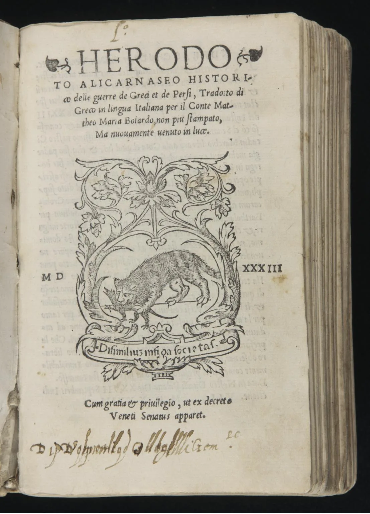
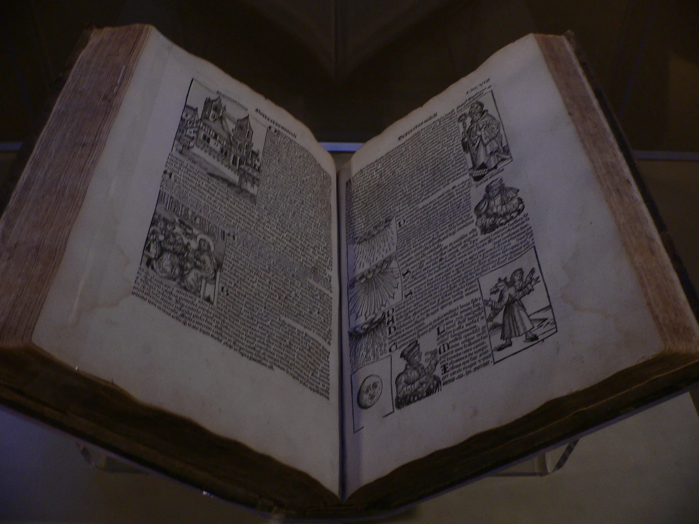
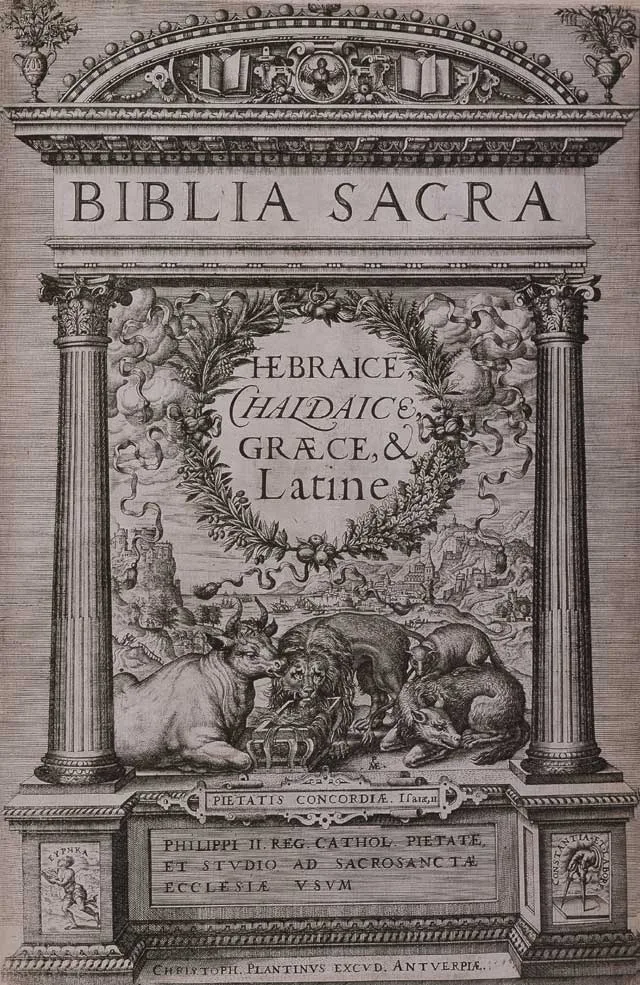
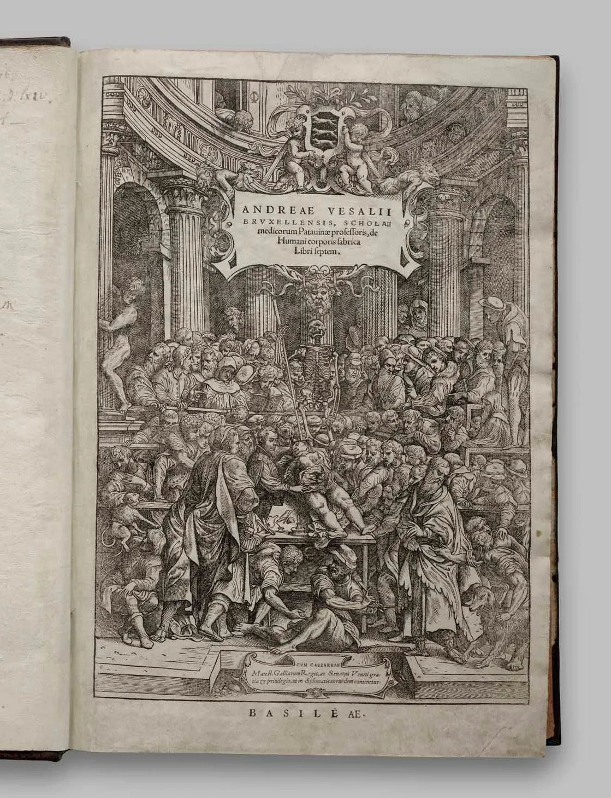
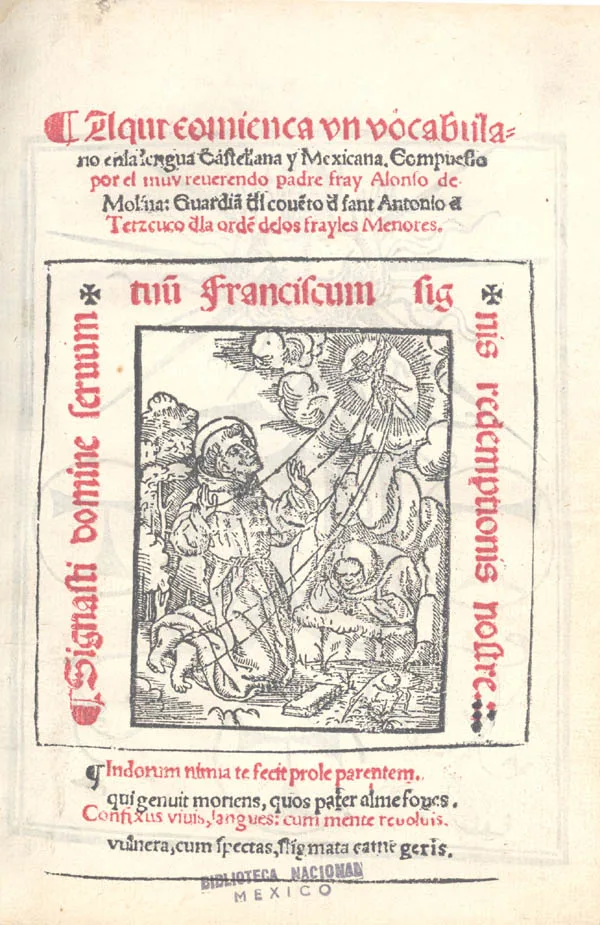
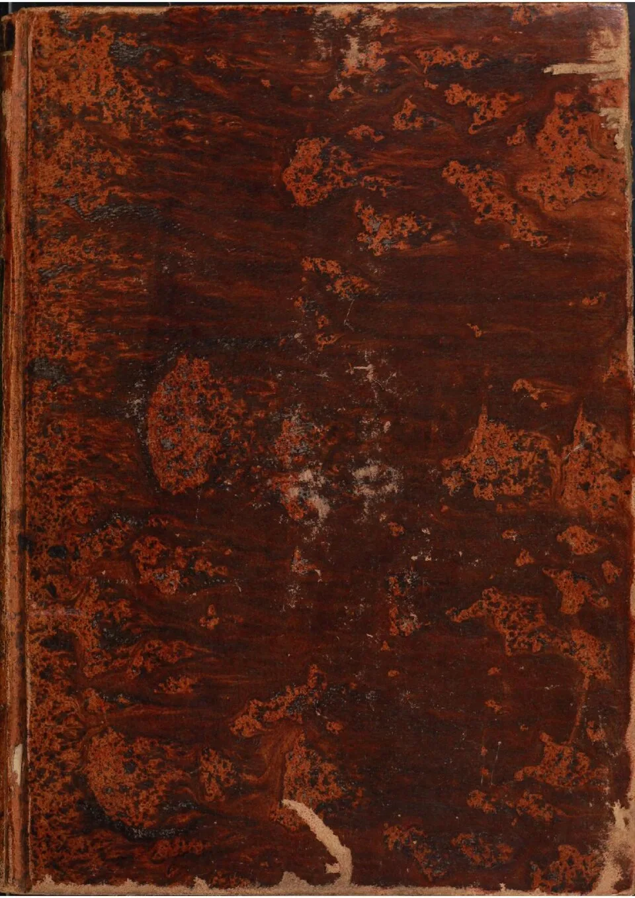

Horarios
Martes a domingo
10:00 – 18:00 h
Lunes cerrado
La primera biblioteca pública de América
Puebla, México
Solicitar visita guiadaMartes a domingo
10:00 – 18:00 h
Lunes cerrado
5 Oriente Núm. 5, 2º piso
Casa de Cultura, Centro, Puebla
$40 MXN general
Estudiantes: $20 MXN
Martes entrada libre
Visitas guiadas gratuitas
Audioguías y exposiciones
Sala temporal de exposiciones
Visitas guiadas gratuitas — consulta disponibilidad
En 1646 el obispo de Puebla Juan de Palafox y Mendoza donó al seminario su colección personal de 5,000 volúmenes, con la condición de que cualquier persona que supiera leer pudiera consultarla. Fue el acto fundacional de la primera biblioteca pública de América.
En 1773 el obispo Francisco Fabián y Fuero levantó la sala principal de 43 metros de longitud con sus tres niveles de estantería en cedro y ayacahuite. Una estructura monumental que perdura como testigo de cuatro siglos de historia y conocimiento acumulado.
El acervo creció a través de los siglos, alcanzando hoy más de 45,000 volúmenes distribuidos en 54 materias y catorce idiomas. Fue declarada Monumento Histórico en 1981 y reconocida por la UNESCO como Memoria del Mundo en 2005.
Tres colecciones — libros, manuscritos e impresos sueltos — distribuidas en 54 materias y catorce idiomas.






Selección de obras emblemáticas. El acervo completo abarca 54 materias en 14 idiomas — del derecho canónico a la química, del náhuatl al árabe.
5 Oriente Núm. 5, 2º piso
Casa de Cultura del Estado de Puebla
Colonia Centro · C.P. 72000
(222) 232 3483
(222) 246 4835 ext. 118
Martes a domingo
10:00 – 18:00 h